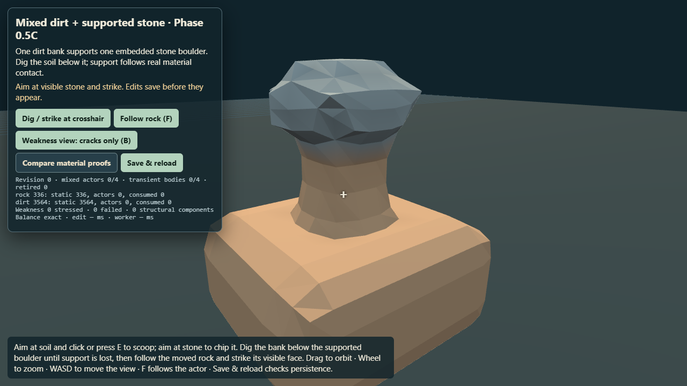
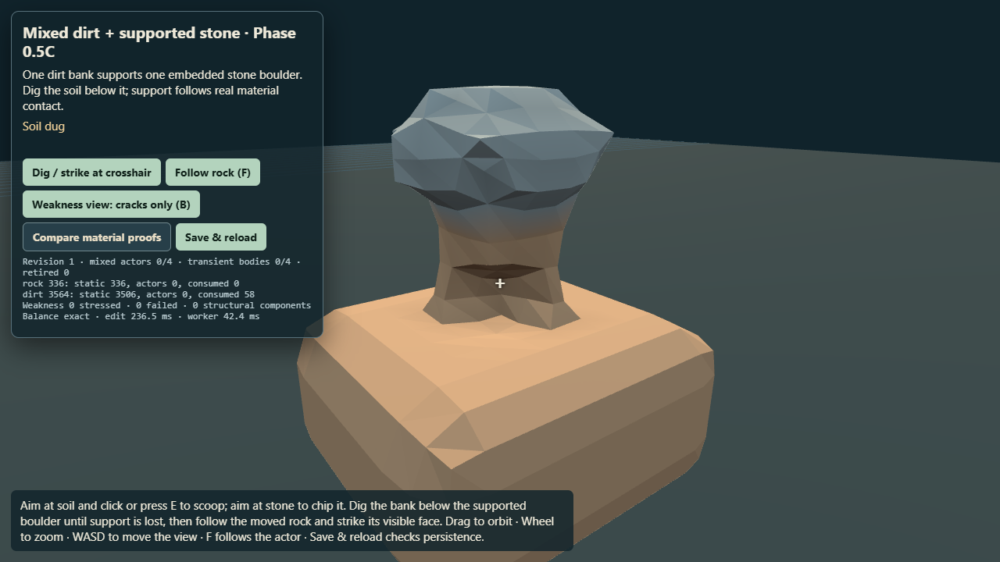
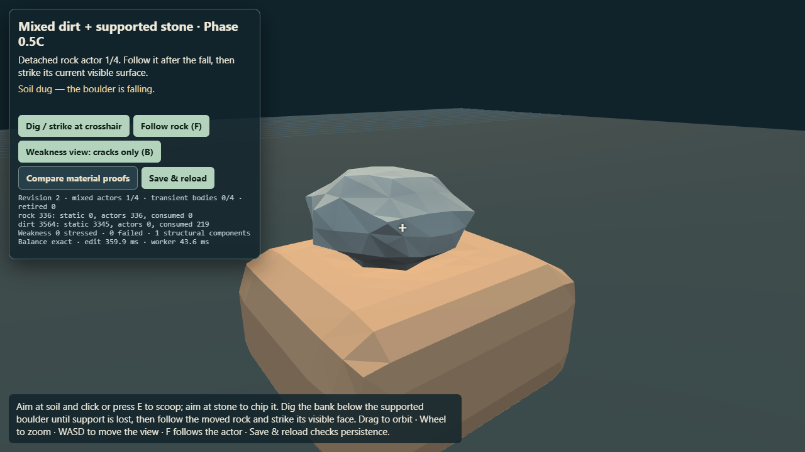
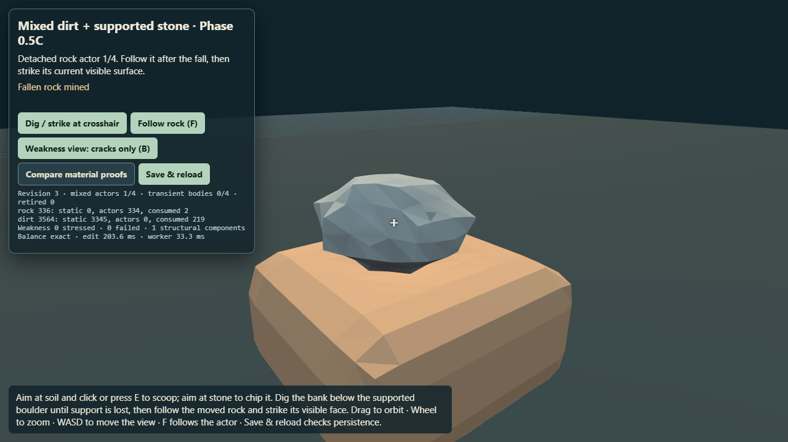

One mixed scalar volume. Excavating supporting dirt removes the rock’s static support without changing its material or granting a reward. The moved boulder remains targetable as hard rock.

1 · Shared starting volume336 rock and 3,564 dirt units; the rock is supported by the anchored dirt.

2 · Dirt scoop58 dirt units removed. All 336 rock units remain static; stone reward stays zero.

3 · Support lossFurther actual dirt removal splits the shared support graph. All 336 rock units transfer to one falling ROCK actor without reward.

4 · Hard-rock responseThe moved surface accepts a hard-rock chip and persistent bond stress; dirt accounting stays unchanged.